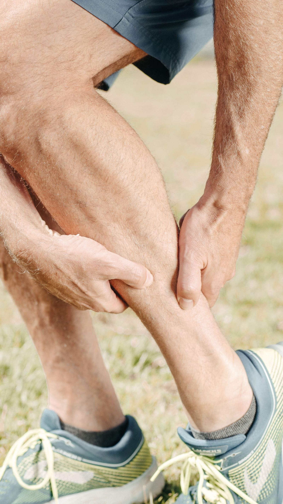
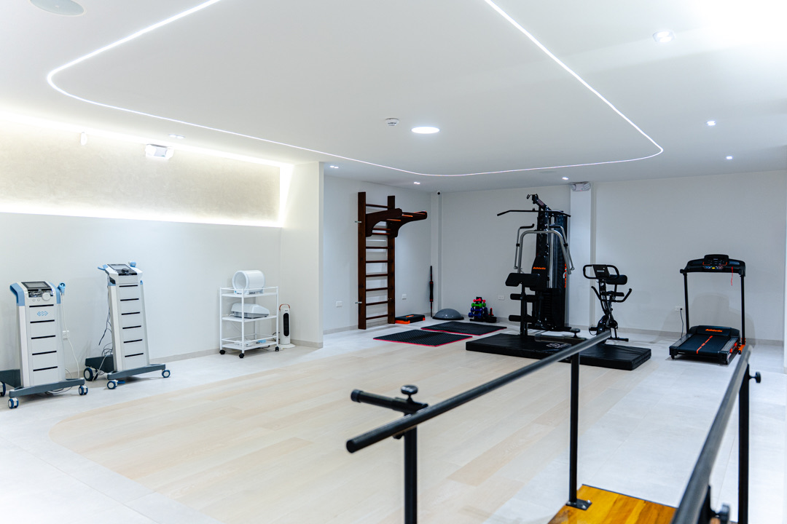

Desgarro muscular
Rotura de fibras musculares por un sobreesfuerzo o estiramiento brusco, con dolor agudo, hinchazón y pérdida de fuerza.

Los músculos generan el movimiento y absorben cargas. Las lesiones musculares son de las más frecuentes en el deporte y responden muy bien a un tratamiento adecuado.
Rotura de fibras musculares por un sobreesfuerzo o estiramiento brusco, con dolor agudo, hinchazón y pérdida de fuerza.
Contracción mantenida e involuntaria del músculo, con dolor y rigidez, frecuente por sobrecarga o mala postura.
Estiramiento excesivo de las fibras sin llegar a la rotura, con dolor y molestia al contraer el músculo.

Tecnología, ciencia y medicina para evitar la cirugía
En SINERGIA MED tratamos las lesiones musculares combinando una valoración médica integral con tecnología de vanguardia y terapias avanzadas, en protocolos personalizados que buscan una recuperación rápida, segura y sin necesidad de cirugía en la mayoría de los casos.
Agenda tu valoración en SINERGIA MED, el primer Medical Biohacking Center de Ambato.
Agenda tu cita